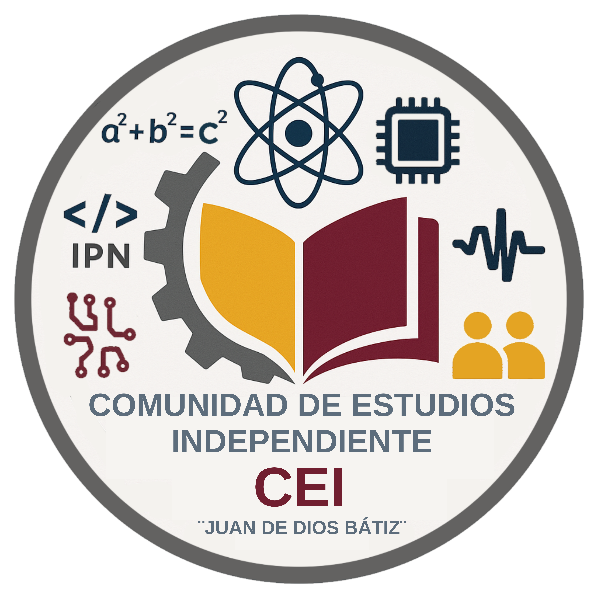

Comunidad de Estudios Independiente “Juan de Dios Bátiz”

Visión general
Comunidad de Estudios Independiente “Juan de Dios Bátiz” (CEI) es una iniciativa estudiantil, académica e independiente, sin fines de lucro, creada para fomentar el aprendizaje colaborativo, el intercambio de conocimientos y el desarrollo científico entre sus integrantes.
Historia y cambios de nombre
La comunidad ha mantenido su espíritu colaborativo y su independencia institucional a lo largo de todo este periodo.
Fundadores
Administración General

| Nombre | Cargo / función |
|---|---|
| Gabriel Iker Flores Aguilar | Secretario Académico |
| Enrique Fernando Nuñez Taba | Secretario de Comunicación y Difusión |
| Luis Allejandro Morett Aparicio | Secretario de Normatividad y Desarrollo Institucional |
| Gael Gonzaga | Coordinador de Recursos y Materiales |
| Rodrigo Constantino | Coordinador de Proyectos e Iniciativas |
A estos cargos se suma el fundador Angel Zohet Muñoz Aceves, con sus respectivas responsabilidades. Los fundadores Abraham Gutiérrez Arquieta y Emilio Calep Vargas Yáñez cesaron en sus cargos el 2 de septiembre de 2026.
Comité Académico

| Nombre | Función |
|---|---|
| Iker Alexander Chavarria Acosta | Presidente |
| José Francisco Paredes Rodríguez | Vicepresidente |
| Iker Alessandro Cigarroa Camargo | Secretario Técnico |
| Santiago Cruz Ortiz | Jefe de la Unidad Informática |
| Veronica Guerrero | Integrante |
| Josue Badillo | Integrante |
| Aveitua Villeda | Integrante |
| Héctor Esqueda | Integrante |
| Bryan Joseph | Integrante |
| Dante Santos | Integrante |
| Elías Caleb | Integrante |
| Emilio Peña | Integrante |
| Nanzil Andrea | Integrante |
| Jonathan Espíndola | Integrante |
Colaboradores destacados
La Comunidad de Estudios Independiente “Juan de Dios Bátiz” es un espacio de participación académica, extracurricular y sin fines de lucro, que agrupa a 650 personas comprometidas con el aprendizaje colaborativo y la excelencia.
El presente documento refleja la constitución y estructura vigente al 6 de septiembre de 2026, conforme al acta constitutiva y considerando los ceses de cargos del 2 de septiembre de 2026.